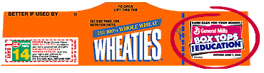

|
|
 Help earn money for your pen pal's school! |
||||||||||||||
|
There is an easy and effective way that we can help out our pen pals' schools. It only takes 2.3 seconds, and EVERYONE can participate, whether on-campus or off. All you have to do is collect box tops from General Mills products (cereal, fruit roll-ups, yoplait, etc.) Each box top is worth FIFTEEN CENTS and every single penny will be donated to the schools to use for educational supplies. Our pen pals will sure be happy when they get free stuff because of our help!!! 
IT'S REALLY EASY! HERE'S HOW:
"What types of foods qualify?" you ask (All types of the following products are included, i.e. Frosted Cheerios)
Tell everyone you know about this great way to help our local elementary schools! Our pen pals will definitely benefit from our help. Keep your eyes peeled for box tops and help serve our community! |
|||||||||||||||